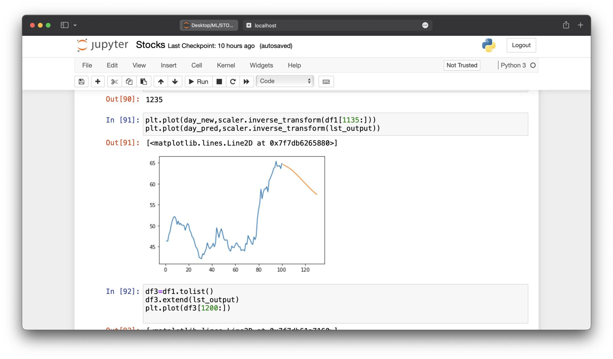
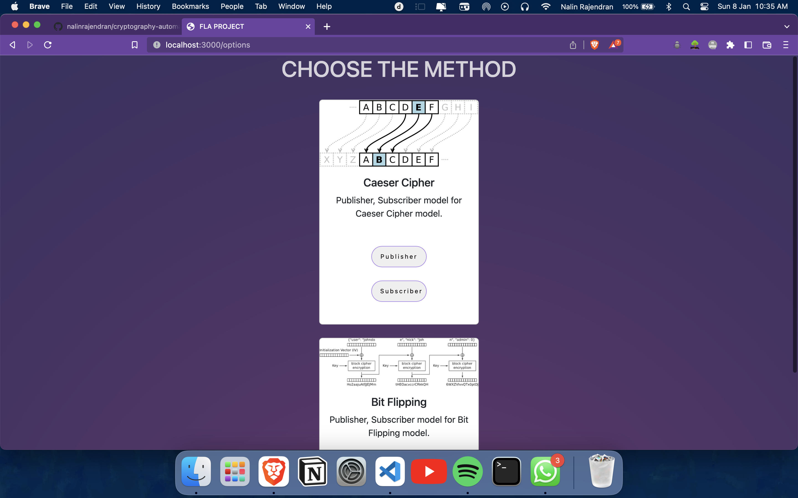

I am Nalin Rajendran, a student at Amrita Vishwa Vidhyapeetham in Coimbatore, currently pursuing my undergraduate studies in the field of B.tech Artificial Intelligence. I am passionate about utilizing technology to create innovative solutions and am always eager to learn new skills.
I have always had an interest in technology, and have been working hard to develop my skills in machine learning and web development. I am constantly learning and experimenting with new technologies, and always eager to take on new challenges.
My portfolio showcases my technical expertise and problem-solving abilities in machine learning and web development. I strive to create projects that are not only functional but also visually appealing with a keen eye for design and user experience.
I am a quick learner and always looking for new opportunities to expand my skillset. I believe that with my passion for technology and commitment to excellence, I can make a bold impression in the industry.
An LSTM (Long Short-Term Memory) model can be used to predict stock prices with good accuracy. It is a type of recurrent neural network that is well-suited for time-series data. It can be trained on historical stock data, and used to predict the closing prices for the next 10 days. LSTMs have gates that control the flow of information, allowing the model to selectively remember previous data points. It can be fine-tuned and improved with more data and advanced techniques.
This is a simple Linear Regression model for predicting the prices of houses in different locations. The focus of the model is on the Exploratory Data Analysis (EDA) and Data cleaning. This approach reflects the real-life challenges of working with uncleaned datasets and highlights the importance of dealing with missing values and identifying highly correlated features.
The model's primary objective is to provide insights on how to effectively handle and preprocess the data before building the model, which is an essential step in any machine learning project.
This is a scenario-based END-TO-END application that demonstrates the use of string matching and cryptography in a publisher-subscriber model. It utilizes two different encryption and decryption methods (Caesar Cipher, Bit-Flipping) to facilitate communication between the publisher and subscriber models. The application is built from the perspective of a Turing machine and utilizes node.js for its backend. This application is an excellent example of how string matching and cryptography can be implemented in a real-world scenario, providing robust security for communication between systems.
